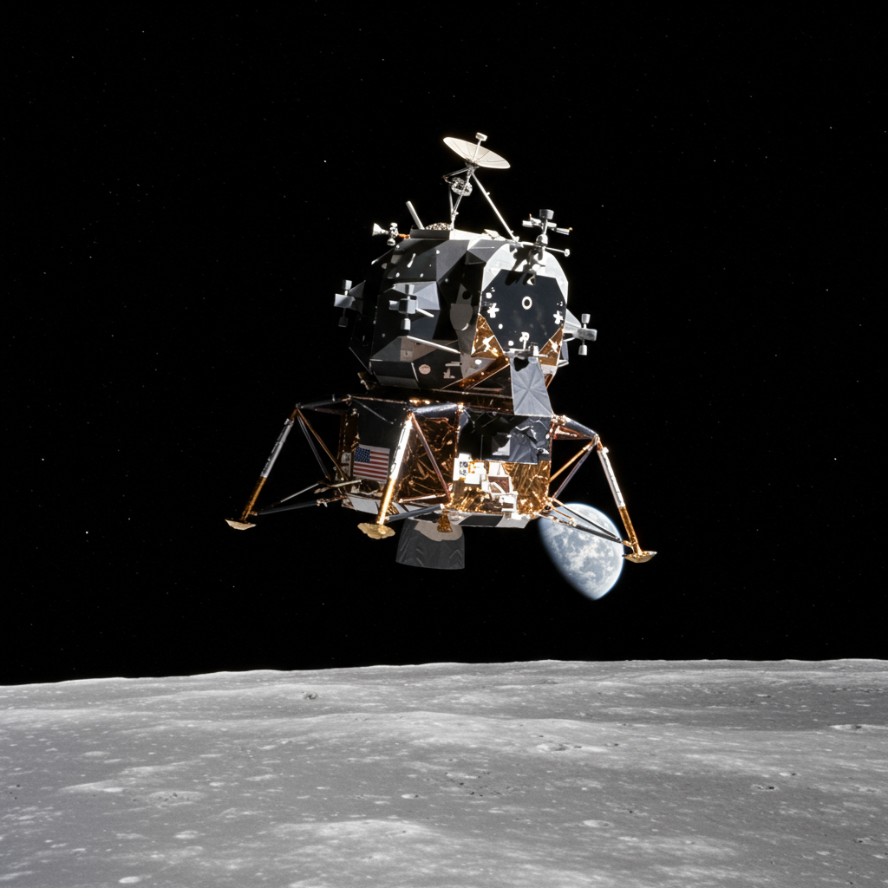

Apolo 8
Agencia: NASA
Fecha de lanzamiento: 21 de diciembre de 1968
Duración: 6 días, 3 horas y 42 segundos
Tipo de misión: Tripulada (órbita lunar)
Objetivo: Realizar la primera misión tripulada que orbitara la Luna y regresar a salvo a la Tierra.
Carga científica: Cámaras para observación lunar, sensores de navegación y comunicaciones, mediciones de radiación, pruebas de sistemas del módulo de mando.
Impacto histórico
Apolo 8 fue la primera misión en enviar humanos más allá de la órbita terrestre baja, y la primera en orbitar la Luna. Los astronautas Frank Borman, James Lovell y William Anders capturaron la icónica imagen "Earthrise" y leyeron en vivo desde el Génesis durante la Nochebuena de 1968. Marcó el éxito técnico clave previo al alunizaje del Apolo 11, y demostró la capacidad de navegación y supervivencia del sistema Apolo en órbita lunar.